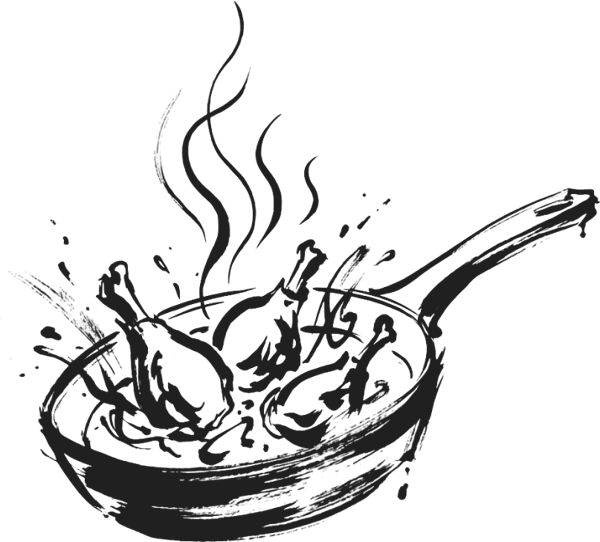
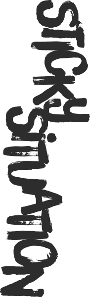
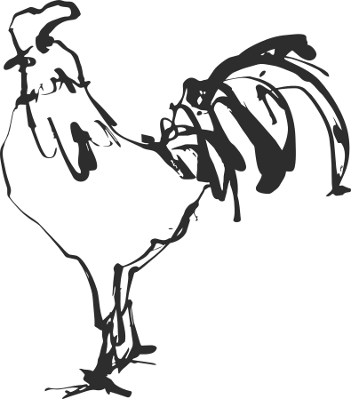

Plan de
la noche
El orden para que todo calce. Toquen una etapa para ir a su receta.


Receta paso a pasoUn trago, un plato y un postre para cocinar a cuatro manos.

El orden para que todo calce. Toquen una etapa para ir a su receta.
